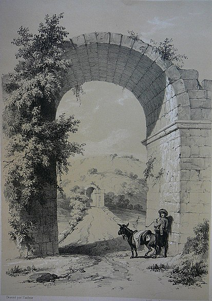
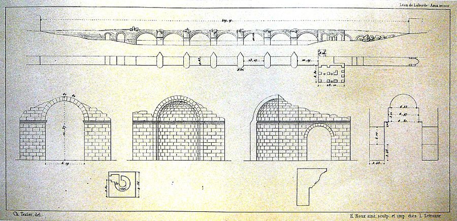

Justinianus Köprüsü :

Konumu Ve Tarihi :

Justinianus köprüsü Anadolun'nun kuzey batısında, Adapazarı'na 5 kilometre, tarihi Bitinya bölgesinde yer almaktadır.
Geç Roma dönemi tarihçici Prokopius'a göre, birbirlerine bağlanmış kayıklardan oluşan seyyar bir köprü yerine inşa edildi.
Güçlü akıntı nedeniyle kayıklar sık sık kopup akıntıyla yok olunca Sakarya nehri üzerindeki ulaşım her seferinde kesiliyordu.
İmparator Justinianus'un taştan bir köprü yaptırması, nehir geçişinin büyük stratejik önemi ile ilgili olduğu da tahmin
ediliyor, zira Konstantinopolis'ten Justinianus'un sık sık savaştığı Sasani İmparatorluğu sınırına kadar uzayan antik bir
krallık yolu buradan geçiyordu.
Justinianus köprüsünün yapım süresi farklı edebi kaynaklardan yararlanarak kesin bir şekilde tespit edilebilmiştir.
Bunlara göre Justinianus Trakya'ya yaptığı bir inceleme yolculuğundan geri döndüğü 559 yılının sonbaharında köprü yapmına
başlandı ve Sasani İmparatorluğu ile 562 yılında kabul edilen barış antlaşmasından sonra tamamlandı. Tarihçi Theofanis'e göre
köprü yapımına Annus Mundi 6052 yılında başlanmış, buysa 559 ya da 560 yılına denk gelir. Yapının 562 yılında tamamlanmış
olduğu, İmparator Justinianus'u ve eserlerini öven Paulus Silentiarius ve Agathias'a ait şiirlerden anlaşılabilir. Öte yandan
köprü yapımı, antik edebiyat eserlerinin tarihlenmesi için ipucu sağlamıştır: Prokop, De Aedificiis adlı geç Roma dönemi mimarisi
hakkındaki önemli eserinde köprünün hala yapım aşamasında olduğunu ifade ettiği için, bu eserini 560-561 yıllarında yayınladığı
varsayılabilir genellikle sanıldığından beş ya da altı yıl önce. Geniş Sakarya nehrinin eski yatağı yaklaşık 3 kilometre kadar
doğuya kaydığı için, yapı bugün Sapanca Gölü'nün (antik adı: Sophon) bir çıkışı olan, küçük Çark Deresi (antik adı: Melas)
üzerindedir.
Yapısı :

Justininanos köprüsü tamamen kireçtaşından yapılmıştır. Oldukça iyi korunmuş yapı iki ucundaki dayanaklarıyla birlikte
429 m'lik bir uzunluğa sahip olup 9,85 m'lik genişliği ve yaklaşık 10 m'lik yüksekliyle de görkemli ölçülere sahiptir.
Yapının görkemi, her biri 23 ile 24,5 m arası genişlikteki kemerlerle vurgulanmaktadır. Köprü ayaklarının genişliği ise
yaklaşık 6 m'dir. Nehrin ortasındaki beş kemer, biri 19,5 m, diğeri 20 m genişliğinde iki kemerle sonlanır; batı tarafındaki
kemerlerinden bir tanesinin altından günümüzde Çark Deresi akmaktadır. Nehir yatağının dışında, sel bölgesinde, köprüyü
selden korumak için ayrıca 3 ile 9 metre genişliğinde beş kemer dehlizi bulunur. Bunlardan ikisi batı kıyısında, üçü doğu
kıyısındadır. Doğu kıyısındakiler tek hatlı bir demiryolu yapımı esnasında kısmen tahrip edilmiştir. Kıyı bölgesinden
nehir yatağı üzerindeki yedi kemere geçişteki iki köprü ayağın her birinin kalınlığı yaklaşık 9,5 m’dir.Yedi büyük
kemerin uç taşlarında eskiden muhtemelen Hıristiyanlığın sembolü olan haçlar vardı, ancak bunlardan sadece iki tanesi
bugüne kadar korunabildi.